Vet Clinic OS V3 · comparison evidence
Implementation candidate. Independent visual and functional acceptance pending. Original reference → newly captured V2.2 baseline → actual final V3. Click any image for the full source. R/S references describe separate stored captures, not merged or current live pages. Preview boards scale complete images without retouching.
Report · Benchmark assessment · Media provenance
01-hero
Compact project facts and one dominant native workspace; reject borrowed business metrics.
Open comparison board
02-hero-agent
Match first-fold authorship and consequential UI; retain Vet sage and the full clinical context.
Open comparison board
Opened original reference · references/S01-agent-v3-hero.webp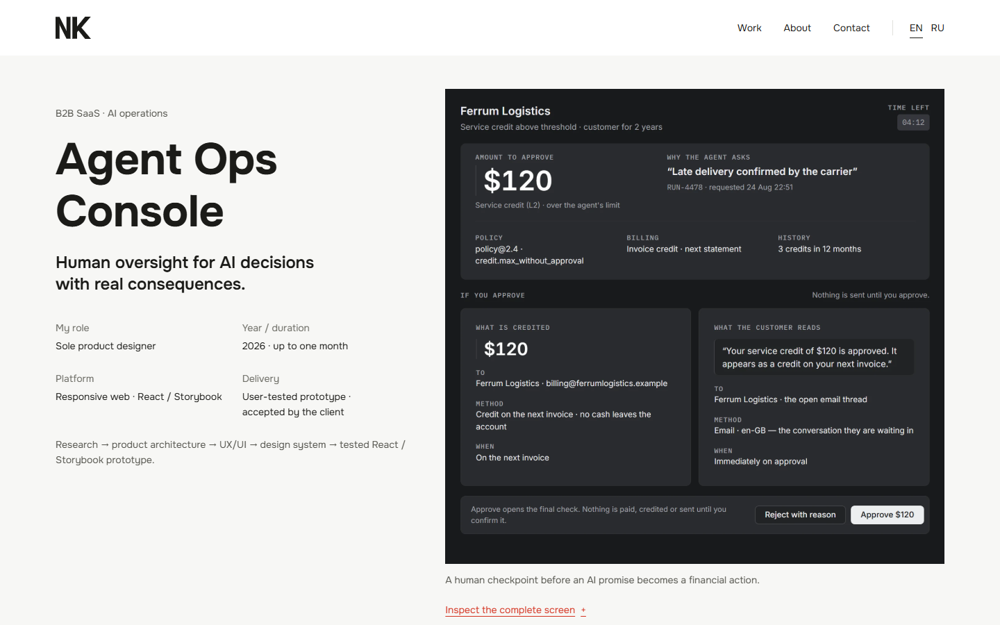
Matched V2.2 BEFORE · before/en-1440-hero.pngFinal V3 AFTER · after/en-1440-hero.png 03-hero-learn
Match fast thesis and provenance; retain one clinical specimen instead of copying Learn’s paired opening.
Open comparison board
Opened original reference · references/S03-learn-v3-hero.png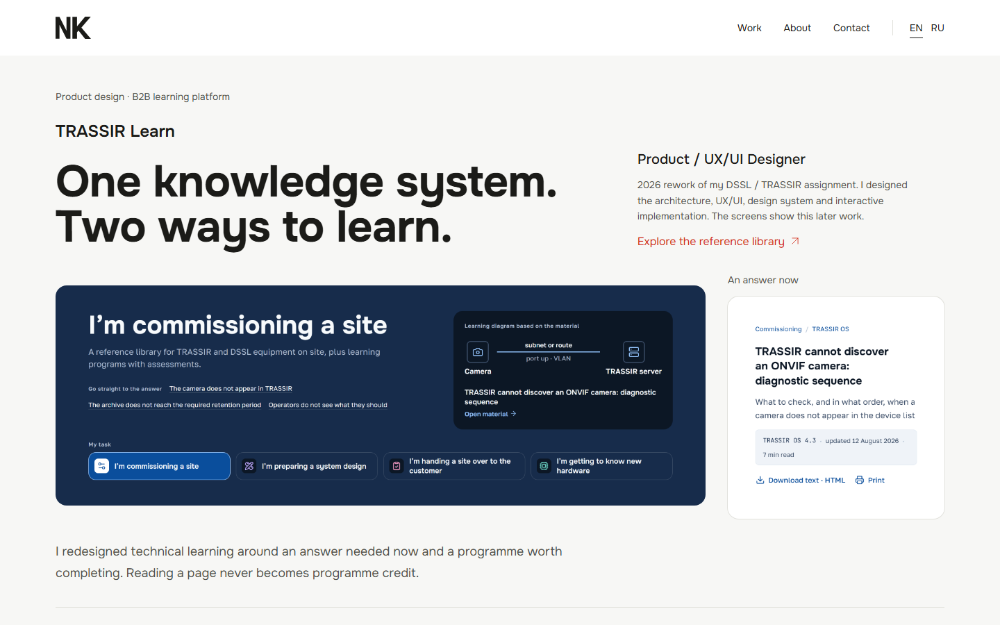
Matched V2.2 BEFORE · before/en-1440-hero.pngFinal V3 AFTER · after/en-1440-hero.png 04-hero-phone
Keep the genuine phone context; add role, scope and browser implementation disclosure before the proof.
Open comparison board
05-constraint
Borrow label/thesis hierarchy; tie three design tensions to the current queue, not invented operational outcomes.
Open comparison board
Opened original reference · references/R01-garri-editorial.jpg Matched V2.2 BEFORE · before/en-1440-problem.png
Matched V2.2 BEFORE · before/en-1440-problem.png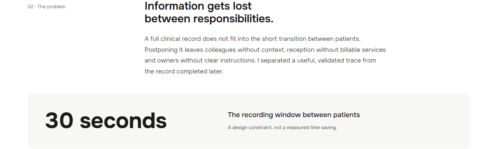
Final V3 AFTER · after/en-1440-problem.png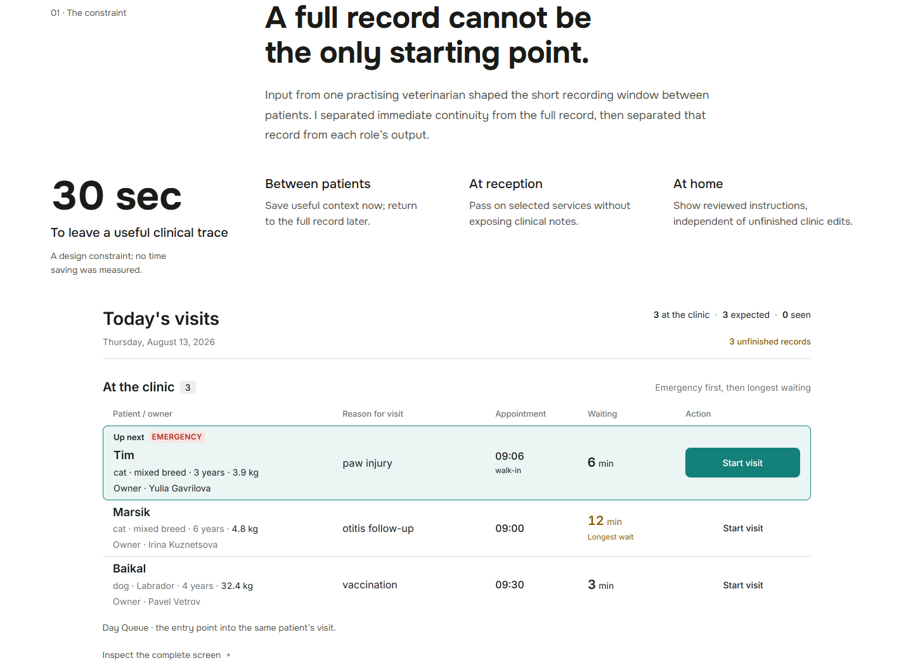
06-diagnosis
Borrow grouped rationale; use a current entry state, with no manufactured old-versus-new product study.
Open comparison board
Opened original reference · references/R03-dounar-diagnosis.jpg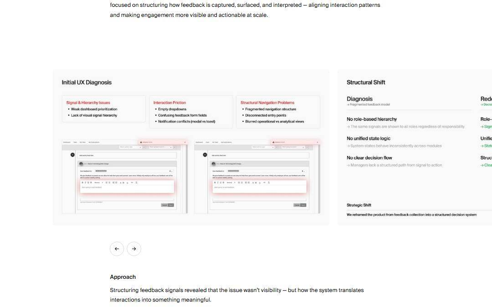
Matched V2.2 BEFORE · before/en-1440-problem.pngFinal V3 AFTER · after/en-1440-problem.png 08-trace
V2 has no trace chapter: its combined clinical section is the before; V3 adds native source-led entry.
Open comparison board
Opened original reference · references/B02-vet-v22-mobile.pngMatched V2.2 BEFORE · before/en-390-trace.png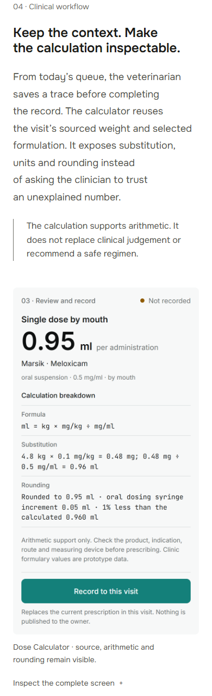
Final V3 AFTER · after/en-390-trace.png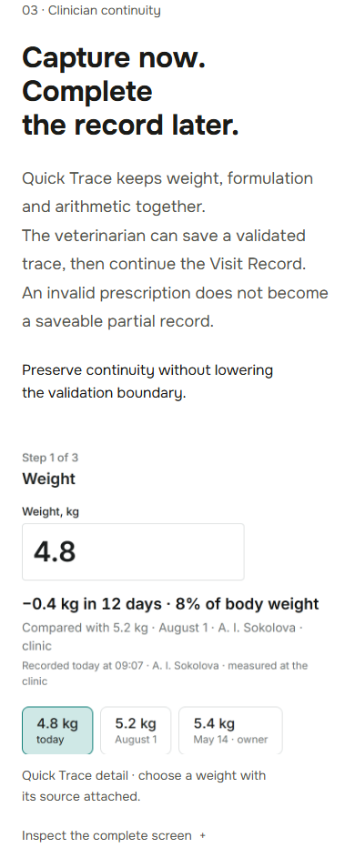
09-calculation
Preserve native arithmetic and zoom; explain source, substitution and rounding without the decorative left rule.
Open comparison board
10-invoice
Preserve complete service proof; replace the repeated full-width stack with a concise asymmetric handoff.
Open comparison board
11-publication
Borrow a real state family at readable scale; show ready versus blocked, with the full document in native zoom.
Open comparison board
Opened original reference · references/R05-ha-components.jpg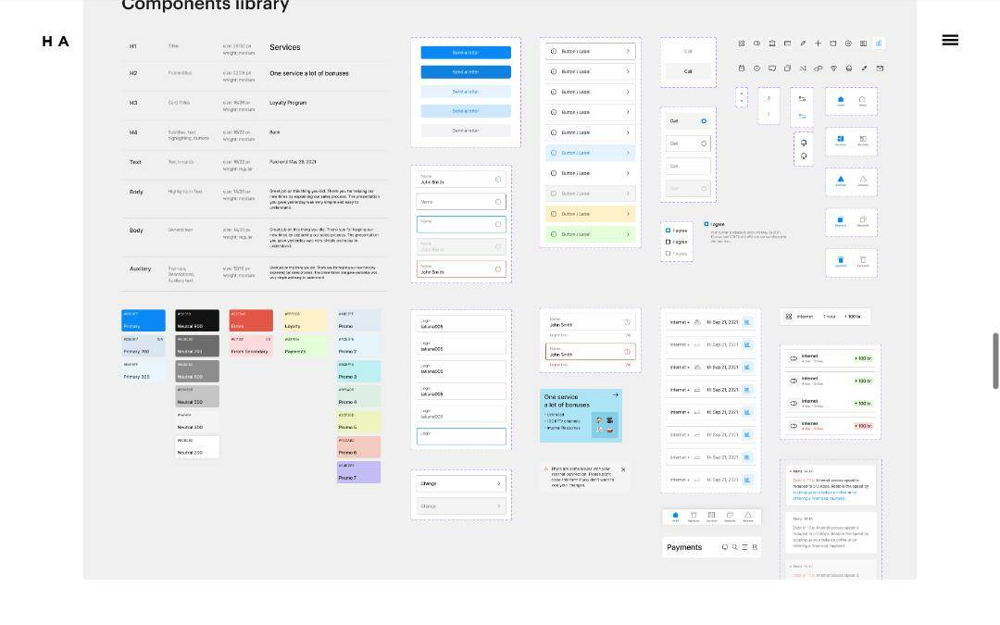
Matched V2.2 BEFORE · before/en-1440-publication.png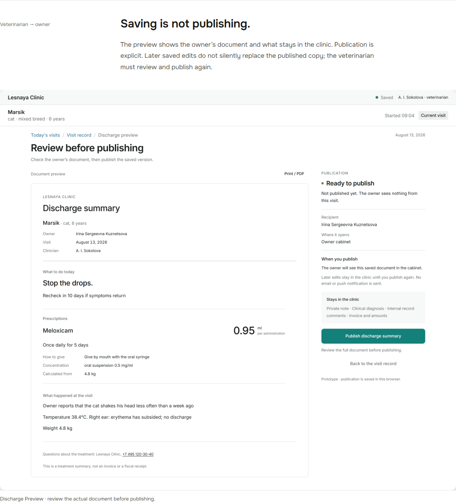
Final V3 AFTER · after/en-1440-publication.png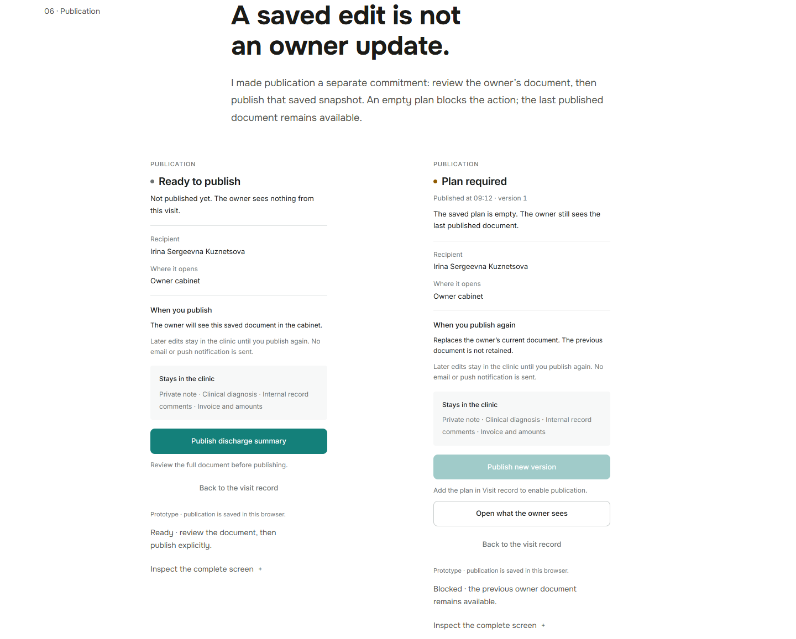
12-owner
Borrow distinct desktop/phone scales; retain the same genuine published snapshot and omit device shells.
Open comparison board
13-process
V2 has no process chapter: existing state evidence is shown before; V3 traces decisions to immutable source.
Open comparison board
Opened original reference · references/R03-dounar-diagnosis.jpgMatched V2.2 BEFORE · before/en-1440-process.png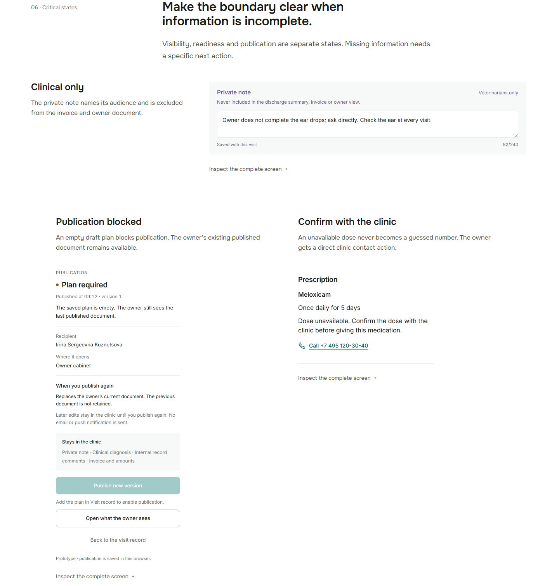
Final V3 AFTER · after/en-1440-process.png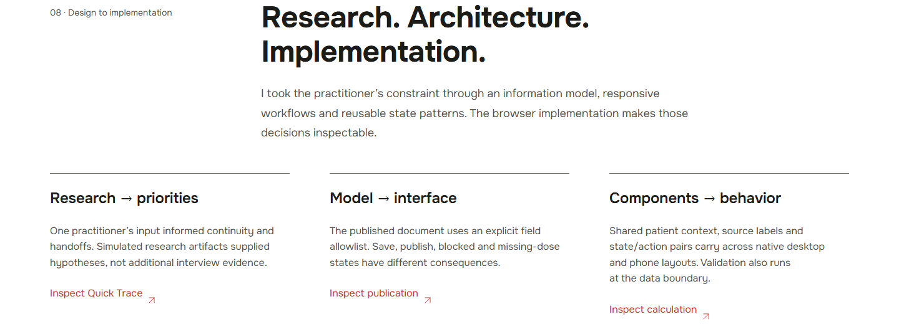
14-outcome
Borrow three clear outcome groups; separate delivery, browser verification and unmeasured real-world impact.
Open comparison board
Opened original reference · references/R06-dounar-outcome.jpg Matched V2.2 BEFORE · before/en-1440-outcome.png
Matched V2.2 BEFORE · before/en-1440-outcome.png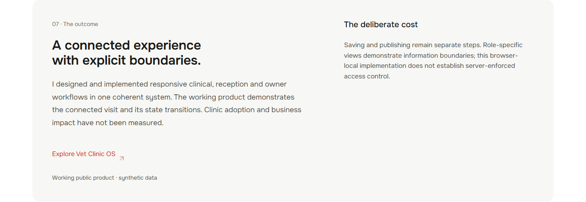
Final V3 AFTER · after/en-1440-outcome.png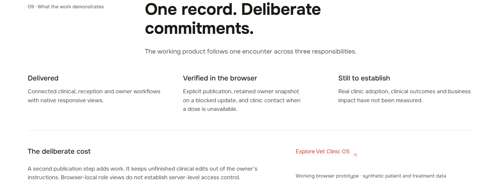